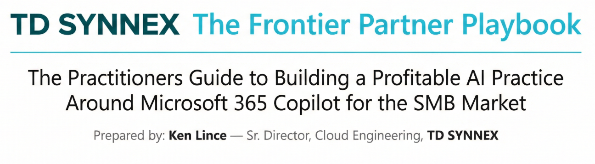

AI is rewriting work now. The winners are the partners who create belief with live experience, then monetize with readiness, security, adoption, and managed AI services.
Every generation has a defining moment where the rules of business change. The internet rewrote retail. Mobile rewrote communication. Cloud rewrote IT. Artificial intelligence is rewriting everything else — and it is happening right now, not in five years.
Microsoft’s 2025 Work Trend Index frames this shift in stark terms: the companies that embed AI into their operations today will set the competitive pace for the next decade. Yet a mounting capacity crisis holds organizations back — 80% of the global workforce reports lacking sufficient time or energy for effective work, while 53% of leaders say productivity must increase. Employees experience an average of 275 interruptions daily, and 60% of their time is consumed by emails, chats, and meetings, leaving only 40% for creative or strategic work.
For Microsoft Cloud Solution Provider partners focused on the SMB market, this represents the single largest revenue opportunity in the history of the channel.
A July 2025 Forrester Total Economic Impact study found that a Modern Work partner’s expected revenue opportunity is $95.60 per user per month across all solution areas, growing 13% year-over-year — and 60% of that growth is attributable to AI. This playbook uses the conservative $91.00 figure drawn from a prior edition of the same study; the updated number is noted here for transparency. One interviewed partner reported: “We grew 21% this past year, and it is all because of Copilot. We are selling more projects and bigger projects, including winning new logos”.
Partners who build services-rich AI practices — leading with live demonstrations, wrapping every deal in readiness assessments and adoption programs, pulling through security upgrades, and delivering ongoing managed AI services — can generate approximately $32 per user per month in new revenue (about $26 in services plus $6 in CSP margins and incentives). That transforms a 50-seat SMB from a low-margin license renewal into a $100,000+ multi-year engagement.
The question is not whether to build an AI practice. The question is how fast.
The ideas in this playbook are grounded in research, channel data, and a straightforward question: If I were still running a partner practice today, what would I actually do?
That question matters because the data is clear but the path forward isn't obvious. The AI managed services opportunity is real, it is accelerating faster than most of the channel is prepared for, and the partners capturing recurring revenue around it are not necessarily the ones with the biggest teams or the deepest technical bench. They are the ones who made an early decision about the kind of business they wanted to build — before the market made that decision for them.
The perspective here comes from more than 30 years of watching this pattern play out from different seats: as a practice manager at a Microsoft partner, as a Partner Technical Strategist inside Microsoft's own partner organization, in a channel leadership role at VMware, and now leading cloud pre-sales engineering at TD SYNNEX. What those roles teach you is pattern recognition. The window for being first in a new category is always shorter than it looks. The partners who move when it opens set the terms. The ones who wait compete on price.
This playbook is built from that vantage point — not a prescription, but an honest look at what the data shows, where the channel is heading, and what the decision looks like from the inside.
The ideas here — particularly around what I'm calling AgentOps — are not yet mainstream in the Microsoft CSP partner channel. If you search for it, you'll find the term used in the AI/ML developer world, where it describes the operational discipline of managing autonomous AI agents. I have not yet found a single Microsoft partner running a named, productized "Managed AgentOps" service the way this playbook describes — though that doesn't mean one doesn't exist. What I do see are partners executing fragments of this work under different names:
The work is happening. No dominant category name has emerged yet. That's the opportunity.
That framing is intentional. This is early framing — a perspective on where I believe the market is headed and what it looks like to get there ahead of the crowd. I am not trying to tell you what to do. This is simply a prompt for your own business strategy.
Here is the simplest version of what's happening:
Your customers are deploying AI agents. They don't know what they're doing. Neither do most of their MSPs. And very few partners are yet formally charging for the work of managing what gets built.
That sentence covers a lot of ground, so let's unpack it.
Microsoft Copilot is in market. Copilot Studio makes it easy for any employee — not just IT — to create an autonomous agent that reads SharePoint data, answers questions in Teams, or processes emails. Microsoft's own data shows tens of millions of agents appeared in the Agent 365 registry within two months of preview availability. These agents are being built by business users, finance teams, HR departments, and operations staff — not by IT, and not by you. They are running on your customers' tenants. You own the relationship. You do not yet own the accountability.
At the same time, most of the AI investment happening across enterprise organizations is not generating measurable returns. MIT's State of AI in Business research found that 95% of organizations are getting zero return from their GenAI initiatives despite tens of billions in enterprise investment. Gartner predicts that 40% of enterprise applications will include integrated AI agents by end of 2026, up from less than 5% today.
The gap between "we deployed AI" and "AI is generating value" is exactly the managed service gap this playbook is written for.
I would look at the work my team is already doing around Copilot and ask an honest question: How much of this are we giving away?
Every prompt fix. Every SharePoint cleanup that happened because Copilot was surfacing the wrong content. Every conversation with a customer about why their Copilot Studio agent stopped working. Every QBR where someone asked "are we getting value from Copilot?" and your team put together an answer for free. That is AgentOps work. It is being done today, by MSPs across the channel, without a name, without a price, and without a contract.
The transition I'm describing — from giving that work away to packaging it as a named, recurring managed service — is not a transformation of what you do. It's a decision about how you charge for what you already do, and a decision to get ahead of a category that is forming whether you lead it or not.
I would start by doing three things:
None of this is absolute. The market is moving fast, the playbook is evolving, and every partner business is different. What I'm offering here is a way of thinking — a mental model for how to approach the AI opportunity from a managed services perspective rather than a project services perspective — not a mandate for exactly how your business should be structured.
Read what follows as a prompt for your own thinking. Take what applies to your customer base, your team's capabilities, and your market position. Leave what doesn't. But do think about it. The partners who are having this conversation with themselves right now are the ones who will have the answer ready when their customers start asking the question.
And that question is coming. Probably sooner than you think.
Microsoft introduced the concept of the Frontier Firm to describe a new class of organization — defined not by size or industry, but by how deeply AI is embedded into its operations and culture.
Early data shows Frontier Firms already dramatically outperform peers: 71% thriving rates vs. 37% globally, more capacity for meaningful work, and greater optimism. The Frontier Firm isn't a size — it's a mindset.
Microsoft's 2025 Work Trend Index found that 82% of leaders say this is a pivotal year to rethink key aspects of strategy and operations, and 81% expect AI agents to be moderately or extensively integrated into their company's AI strategy within the next 12–18 months. Among Frontier Firms, 95% of leaders are considering AI-specific hires in the next 12–18 months (compared to 78% among all leaders).
Microsoft has built a tiered recognition structure within the Microsoft AI Cloud Partner Program (MAICPP) to recognize and reward partners leading this AI transformation.
The Frontier Partner badge is the capstone recognition for partners demonstrating advanced capabilities across multiple Microsoft disciplines. Earning it requires holding:
This combination signals end-to-end AI transformation capabilities — from productivity and collaboration through to security, compliance, and custom AI development.
In March 2026, TD SYNNEX achieved the Microsoft Frontier Distributor designation, becoming one of the first distributors globally to attain this status. This independently audited recognition required meeting quantitative metrics across six categories plus passing a comprehensive third-party qualitative assessment covering 83 capability control points. The designation positions TD SYNNEX among the most advanced Microsoft distributors worldwide across 100+ countries.
When partners transact through TD SYNNEX, they access the infrastructure, enablement, and ecosystem of a Microsoft-validated Frontier Distributor:
Despite the enormous opportunity, most SMB customers have yet to meaningfully embrace Copilot. The issue isn't the technology — it's how partners are positioning and delivering it. The numbers are sobering:
This isn't a market awareness problem. It's a partner execution problem — and it's repeatable and fixable.
The 7 Ways Partners Are Missing the Mark — And What to Do Instead
✅ The Partner Motion: Value First, Architecture Second
The most common deal-killer in the SMB Copilot motion. The conversation goes like this:
One SMB recounted being pitched by their CSP partner: "Rather than discussing cost, they insisted that a $60K pre-Copilot assessment be done before they would sell us Copilot licenses. I understand the plight as there is no money in reselling licenses today, but the reality is these 'assessments' aren't viewed as helpful unless there is a business requirement mandating them."
✅ The Partner Motion: Build a Copilot Practice, Not a Copilot Transaction
Partners are provisioning Copilot the same way they provision Exchange Online — as a transaction. That's the wrong mental model entirely.
The data is unambiguous: 80% of AI proofs-of-concept never scale. Not because the technology failed, but because there was no strategy behind the rollout — no scenario mapping, no defined outcomes, no adoption plan. Teams get excited by cool demos only to discover that end users ignore it because it doesn't connect to their daily pain.
Copilot is not an infrastructure project with a go-live date. It's a practice-building engagement. Partners who treat it as the former will win the license and lose the renewal.
✅ The Partner Motion: Seed Champions, Not Administrators
Even partners who do run a pilot often sabotage it before it starts by seeding it with the wrong users. Two failure patterns dominate:
✅ The Partner Motion: Adoption is a Deliverable, Not an Afterthought
This is the "set it and forget it" failure mode, and it's rampant in the SMB channel.
Licenses get provisioned. A brief training email goes out — or doesn't. Three months later, usage reports show that the only active Copilot user is the IT admin who set it up. The customer doesn't renew. The partner loses the ARR and wonders what happened.
What happened was predictable: employees didn't know they had access, didn't know how to use it, and no one gave them a reason to try. Without champions, role-specific training, feedback loops, and workflow integration, adoption stalls at the technical deployment layer and never reaches the business users who would actually justify the spend.
The rule is simple: AI doesn't transform an organization by being purchased. It transforms when people know how to apply it.
✅ The Partner Motion: Scenarios Before Speeds and Feeds
Walking into a customer meeting and leading with "AI is transforming the way businesses work" is not a pitch — it's a TED Talk. SMB owners don't buy categories. They buy solutions to problems they feel every day.
When customers are unclear on what Copilot actually does, how it fits their workflows, or what success looks like, hesitation is the natural response. And without clear KPIs anchoring the conversation — time saved, error reduction, faster proposal turnaround, fewer missed follow-ups — even interested customers disengage.
✅ The Partner Motion: Lead with the Business Case, Not the Bill
Even at the Copilot Business price point of $21/user/month, partners who can't quantify ROI before the customer does their own math are walking into a losing conversation. For many SMBs, adding Copilot to their existing M365 investment feels like a significant new line item — and that math needs to be pre-empted with a business case, not countered after objection.
Compounding this: a very real and growing tension in the CSP channel where customers are discovering they can purchase Copilot direct from Microsoft at promotional pricing with no minimum seat requirement — then asking their partner why they're paying more. Some are openly accusing their trusted partner of overcharging. This is an uncomfortable conversation that is happening right now across the channel, and partners who aren't ready for it will lose both the deal and the relationship.
✅ The Partner Motion: Own the Clarity Your Customer Can't Find Anywhere Else
Microsoft's rapid expansion of the "Copilot" brand across dozens of SKUs and product surfaces created genuine marketplace confusion — and too many partners absorbed that confusion and transmitted it straight to their customers. Customers can feel uncertainty in a sales conversation. When the partner doesn't seem to fully understand what they're selling, trust evaporates — and trust is the only thing a CSP partner has that Microsoft Direct doesn't.
Partners who can't clearly and confidently distinguish between Copilot Chat (free, included with M365), Microsoft 365 Copilot Business ($21/user/mo, SMB-capped at 300 seats, full feature parity with the enterprise SKU, available now with promotional pricing through the M365 Business bundle), and Microsoft 365 Copilot ($30/user/mo, enterprise-grade with advanced admin controls and E-suite integration) are creating the exact hesitation that kills deals.
The Pattern Behind All Seven Pitfalls
Read across these seven pitfalls and a single theme emerges: partners are defaulting to what they know — infrastructure deployment, license transactions, prerequisites-first thinking — rather than adapting to what Copilot actually requires.
Copilot is not an IT project. It's a business change initiative that happens to involve technology. The partners who are winning this motion have made one fundamental shift: they've stopped thinking like technologists deploying a tool and started thinking like business advisors delivering an outcome.
The good news: every one of these pitfalls is correctable. None of them require new technical skills, new certifications, or new headcount. They require a different conversation — one that starts with the customer's business, not the partner's portfolio.
That's what the rest of this playbook is built to enable.
Not every employee is the right first champion. The partners who close Copilot deals fastest identify the right person in the room — the one whose daily pain maps directly to Copilot's strengths — and make the demo about their life, not about features. Here are the seven profiles that consistently deliver the fastest time-to-value in SMB deployments.
The #1 quick-win profile across almost every SMB vertical. Sales reps are drowning in pre-call research, follow-up emails, proposal drafts, and CRM updates — all of which eat time that should be spent in front of customers. With AI-generated meeting briefs, reps can quickly understand customer backgrounds and tailor their pitch — and more than 85% of surveyed sellers reported feeling highly confident and better positioned as trusted advisors as a result. Sales reps were also able to handle roughly 10% more customer meetings while spending less time on each one.
In practice: Copilot drafts the follow-up email from the meeting transcript before the rep even leaves the parking lot. It pulls together a client brief from emails, files, and Teams history before a renewal call. It generates a proposal structure from a bullet-pointed outline in seconds. Enterprise early adopters saw Outlook email composition time drop by 45% — for a rep running 8–10 accounts, that's a compounding advantage every single day.
What to show them in the demo: Open a Teams meeting transcript from a recent customer call and have Copilot generate the follow-up email and action item list live. Watch the room change.
The person who runs everything and documents nothing — until now. As a project manager, the majority of time is spent in meetings — leading them, facilitating discussion, and following up after. With Copilot, it feels like having an extra set of hands, freeing focus for what truly matters: the discussions and interactions themselves. Note-taking, action item capture, meeting recaps, status updates — all of it can be offloaded.
The PM profile wins fast because the pain is so consistent: they're the hub of communication for the entire team, which means they're the bottleneck for every recap, every follow-up, every status update. Where preparation for a 1:1 or project meeting used to take 30 minutes, Copilot cuts it to 10 — and the ability to save Copilot chats means building on previous context for recurring meetings over time.
What to show them in the demo: Pull up a recorded Teams standup. Have Copilot generate the meeting summary, assigned action items by person, and a draft status email to the team — in under 60 seconds.
The person who touches every department and owns the inbox nobody else wants. This role is a goldmine for Copilot ROI because it's inherently cross-functional and communication-saturated. They're managing calendars, drafting communications on behalf of others, summarizing long email chains for leadership, pulling together materials for meetings, and often writing content they feel insecure about.
"A key part of my role involves sending business updates, follow-up messages, and other management forms of communication. I used to lose a lot of time trying to make sure my messages were clear, concise, and appropriate for the audience. Now I spin out whatever is on my mind and let Copilot create a version that clarifies my message and adjusts the tone. This has saved me so much time and energy."
For non-native English speakers or anyone who struggles with written confidence, Copilot is transformative — and that transformation is visible and immediate.
What to show them in the demo: Take a messy brain-dump paragraph and watch Copilot turn it into a polished, appropriately toned professional email. No prompt engineering required.
Repetitive document work, sensitive communication, and onboarding — all Copilot territory. HR staff can draft policies, job descriptions, and training manuals much faster with Copilot — one survey noted HR professionals use Copilot for policy and job description drafting 25% of the time. Every time a role opens, Copilot can generate the job description from a brief. Every onboarding doc can be drafted in minutes. Every policy update can be reformatted for clarity in seconds.
In SMBs where HR is often a one- or two-person shop wearing many hats, this matters enormously. They don't have a team of writers. They have a deadline and a blank document.
What to show them in the demo: Prompt Copilot to draft a job description from a three-sentence brief. Then ask it to turn the same brief into an onboarding checklist. Both outputs in under two minutes.
Data-heavy, report-heavy, and sitting on a goldmine of Excel use cases. Finance teams can use Copilot to speed up budgeting and forecasting — it can make data-backed recommendations by analyzing past trends. There was a 35% increase in formula generation via Copilot in Excel after its introduction. For SMB finance roles where the controller is also the one building the board deck, pulling variance reports, and answering the owner's "what does this mean?" questions — Copilot becomes the analyst they never had budget to hire.
The specific win here is speed-to-insight: instead of spending an hour building a chart to explain a budget variance, they describe what they need in plain language and Copilot builds it. Executives need answers, not spreadsheets — Copilot scans data and points out what matters, highlights anomalies and outliers, surfaces emerging trends, and provides context in plain English.
What to show them in the demo: Open a real (anonymized) Excel spreadsheet and ask Copilot to identify the top three trends and flag any outliers. Watch a finance person's eyes go wide.
The one-person content machine who's always behind on something. In SMBs, marketing is often a single coordinator — or the owner themselves — responsible for social posts, email campaigns, website copy, and sales collateral simultaneously. 67% of marketing teams use Copilot in Word for content creation, and editing time in Word decreased by 26% on average when using Copilot's suggestions.
The unlock for this profile is the speed from idea to first draft. They're not replacing creativity — they're eliminating the blank page. A campaign brief becomes an email draft. A slide deck summary becomes a LinkedIn post. A product overview becomes a customer one-pager. The raw thinking is theirs. The formatting, drafting, and polishing is Copilot's.
What to show them in the demo: Take a product description paragraph and ask Copilot to generate three versions — one for a social post, one for a customer email, one for a sales deck slide. Three formats, one prompt, thirty seconds.
The person in back-to-backs all day who has no time to actually manage. This profile exists in almost every SMB that's grown past 15 people — the department head or team lead who spends 60–70% of their week in meetings and the rest catching up from them. Every customer — literally every single one — in one study of more than 30 organizations put automated meeting summaries at the top of their wish list. Copilot generates minutes, key points, and follow-up tasks from Teams meetings — no more frantic note-taking, no more missed decisions.
The specific unlock for this profile is the ability to be in two places at once. Using Copilot allows you to "join a meeting afterwards" — recapping it later with AI to check notes, tasks, and decisions, asking about specific moments as if having a conversation with the transcript. For a manager with overlapping calendar blocks, that's not a productivity tip — it's a fundamental change in how they operate.
What to show them in the demo: Take a recorded Teams meeting they weren't able to attend. Ask Copilot: "What decisions were made? What action items do I own? What do I need to follow up on?" Deliver the answer in 30 seconds. That's the moment the deal closes.
The most successful partners have abandoned slide decks entirely when selling Copilot.
They use a “Show and Tell” motion that makes the value undeniable — and it closes faster than any deck ever will.
The most powerful thing you can do in this meeting is turn your laptop around and show the customer what you actually did to prepare for this meeting. Walk them through it: you started with a series of prompts to pull together everything you needed to know about their company — recent news, their M365 footprint, renewal history, open support tickets. Over time, those prompts became a repeatable personal agent you built in the Copilot app. You shared it with every account manager on your team. Now everyone walks into customer meetings with the same level of preparation in a fraction of the time.
Once you have their attention with your own workflow, you immediately transition to showing them how easily they can do the exact same thing for their teams. This is where you demystify AI and make it accessible.
Open the Copilot app in Teams right in front of them. Click "Create an agent." Point it at a specific SharePoint folder — like HR policies, standard operating procedures, or a product pricing repository. Give it a name, pick an icon, and ask it a question based on those documents. The entire process should take less than three minutes.
The goal here is to prove that any licensed user can build these tools without an IT ticket. You are showing them that Copilot isn't just a chat box; it's a platform for building custom, repeatable workflows that solve specific departmental problems instantly.
This demonstration naturally leads to the realization that if anyone can build an agent grounded in company data, that data must be perfectly governed. Which brings you directly to the final step.
This is how you sell the $15,000 data governance and security project. You aren’t selling “compliance” — you are selling the safe deployment of the AI they just fell in love with. The pivot is not a separate conversation. It is the natural conclusion of the demo.
Every stage of the Copilot ladder represents a distinct product, a distinct demo, and a distinct revenue opportunity. The table below is your field reference — price, limitation, and upgrade signal all in one place. The cards beneath it are your field guide — know the demo cold, have the pivot line ready, and always be able to name the revenue opportunity before you leave the room.
Agent 365 is real, it reaches GA on May 1, 2026, and it solves a genuine governance problem. But for the vast majority of SMB customers you serve today, it is not a near-term priority. Your job is to know it exists, position it correctly in the customer journey, and avoid introducing licensing complexity before the customer has earned it.
Agent 365 is a governance control plane for AI agents — it provides a centralized registry, Entra ID–based access controls, and activity monitoring across all agents running in a tenant. It is not included in E3 or E5; it is available as a standalone add-on at $15/user/month or bundled in E7. A free-tier Agent Registry is available to any Microsoft Cloud subscriber.
The real near-term opportunity is not the license — it’s the governance conversation the license validates. The fact that Microsoft built a control plane for AI agents proves that agent governance is a real and growing need. Start building the governance practice today using existing M365 tools and the free Agent 365 Registry, and layer in the paid license when the customer’s maturity justifies it.
Partners will hear about this SKU. The quick-reference table and stage cards below show exactly when and how to introduce it.
| Stage | SKU | Price | Key Limitation / Upgrade Signal | Partner Revenue Range |
|---|---|---|---|---|
| 1 | Copilot Chat | Free | No M365 app integration; web-only | Conversation starter only |
| 2 | M365 Copilot Business | $21/user/mo | Max 300 seats; requires Business Basic/Standard/Premium base | Margin + $5K–$10K Data Readiness |
| 2.5 | Personal Agent Creation | Included in Copilot Business | Requires user enablement to drive adoption | $1.5K–$3K Enablement Workshops |
| 3 | M365 Business Premium | $22/user/mo | Max 300 seats; basic DLP/manual sensitivity labels only | Margin + $10K–$15K Security Deployment |
| 3.5 | Copilot Cowork Agentic | Included in M365 Copilot | Frontier program preview; requires flawless data governance | Accelerates Premium/Purview + AgentOps pipeline |
| 4 | Copilot Studio | $200/mo (25K msgs) | Overage requires add-on message packs | $15K–$50K+ Custom Agent Development |
| 5–6 | E3 + M365 Copilot / E5 | $66 / $57/user/mo | 300-seat cap hit or compliance outgrown manual labeling | Licensing uplift + $50K+ Enterprise Migration |
| 7 | M365 E7 Frontier | TBD (GA May 1, 2026) | Frontier destination; Agent 365 included | Managed AgentOps retainer opportunity |
| Add-on | Agent 365 New | $15/user/mo (or in E7) | Governance control plane for AI agents; not in E3/E5; enters at Stage 2 — see The Agent Maturity Model section | Managed governance retainer; pairs with AgentOps tier |
Copilot Business vs. Enterprise: Copilot Business ($21/user/mo) launched December 2025 exclusively for SMBs (≤300 seats) on Business Basic/Standard/Premium. The Enterprise SKU ($30/user/mo) is for E3/E5 customers. AI functionality is identical — the difference is governance depth tied to the underlying base license.
Copilot Cowork (March 2026): The shift from conversational AI to agentic AI. Users can delegate multi-step, long-running tasks — scheduling, research, document generation — that run autonomously in the background. Built into the Copilot license. Currently in Frontier program preview and represents the most significant new adoption driver in the SMB market.
The 300-seat hard cap applies to Copilot Business and all Business SKUs. Customers crossing that threshold must migrate to E3 + Microsoft 365 Copilot (Enterprise) — a significant licensing uplift event.
Purview governance by tier: Business Premium → basic/manual governance only. E3 → foundational Purview. E5 → full automated governance. This progression is the compliance upsell story at every stage.
The cards below are your field guide for each stage. Know the demo cold, have the pivot line ready, and always be able to name the revenue opportunity before you leave the room.
The Agent Maturity Model below illustrates how Microsoft Copilot evolves from individual productivity to full-scale AI platforms and SaaS businesses — and where CSP partners create value at each stage of that journey.
The Copilot opportunity produces two distinct revenue streams that stack, not compete. Stream 1: Professional Services — security readiness, adoption workshops, custom agent builds. One-time or project-based. Stream 2: Managed AgentOps — the ongoing management layer of the customer’s AI estate. Recurring, sticky, and unlike anything the channel has seen before.
The partner opportunity doesn’t peak at Copilot. It starts there. The license sale is the door. What’s behind it is a compounding, multi-year services practice that gets deeper and more defensible with every engagement.
| Stage 1 | Stage 2 | Stage 3 | Stage 4 | |
|---|---|---|---|---|
| Focus | Copilot Deployment & Adoption | Agent Creation & Workflow Automation | Power Platform Integration & Business App Connectivity | Azure AI Custom Solutions & Managed AgentOps |
| Timeline | Months 1–3 | Months 3–9 | Months 6–18 | Month 12+ |
| What the Bank Gets | Copilot-enabled workforce; secured data environment; adoption playbook | First custom agent (Loan Pre-Qual MVP); initial workflow automation | Fully integrated Loan Pre-Qual Agent with Power Automate routing, Bookings scheduling, and compliance safeguards | Custom AI models; multi-agent orchestration; full AI estate management |
| Pro Services Revenue | $8K–$23K | $3.5K–$8K+ per agent | $15K–$50K+ | $30K–$75K+ |
| Managed Service Tier | Tier 1: $15–$25/user/mo | Tier 2: $35–$55/user/mo | Tier 2 (expanded) | Tier 3: $65–$100/user/mo |
Every engagement in this model generates two distinct types of revenue. Professional Services are one-time project fees — scoped, delivered, and invoiced: deployments, security readiness projects, agent builds, Power Platform integrations. Managed AgentOps is the ongoing monthly retainer that covers everything required to keep the AI estate healthy, governed, and improving after the project work is done. These are always priced and billed separately. Agent builds are never included in the retainer — they are discrete project engagements at $3,500–$8,000+ per agent. The retainer covers ongoing management of deployed agents, not new construction.
The Managed AgentOps retainer is structured in three tiers that enter the engagement as the customer's AI estate grows:
The five core AgentOps service components — prompt optimization & tuning, data grounding updates, token cost management & Copilot Credit governance, security & agent governance (Agent 365, GA May 1, 2026 at $15/user/month), and adoption measurement & AI ROI reporting — are distributed across these tiers as the customer's AI estate matures.
Every customer starts here. This is the foundational engagement: license provisioning, security posture readiness, champion identification, scenario mapping, role-specific training, prompt guide development, and a structured 30-60-90 day adoption plan. Done right, this is a billable engagement — not a free onboarding service.
At First Community Bank, this means provisioning Copilot Business across the loan officer team, configuring Purview sensitivity labels on lending documents, reviewing RBAC and Conditional Access policies, and identifying 5–10 Day 1 Champions — the loan officer VP who lives in Outlook, the branch manager running five recurring meetings a week, the operations lead who builds every report in Excel. The partner builds role-specific prompt guides for loan officers, operations, and compliance, and runs a structured 30-60-90 day adoption sprint.
Stage 1 is where the partner plants the seeds that Stage 2 and Stage 3 harvest. The most powerful thing that happens in this phase isn’t the security configuration — it’s the moment individual users start building things themselves and realize what Copilot is actually capable of. That realization is what generates the ideas that fund the next engagement.
1:Few Prompt Coaching Sessions. Run small-group workshops (5–8 people, role-specific) where users learn to craft effective prompts for their actual daily workflows. Loan officers learn to draft client correspondence and summarize meeting notes. The compliance team learns to generate policy summaries. Operations learns to analyze spreadsheets. These sessions aren’t generic demos — they’re hands-on with the bank’s real scenarios. When someone saves 45 minutes on a task they do every day, the conversation about AI investment changes permanently.
Personal Agent Building Workshops. Introduce users to building their own agents in the Copilot app — simple, SharePoint-grounded agents they can create in under five minutes without an IT ticket. A loan officer builds a “Loan Product FAQ” agent grounded in the bank’s rate sheets. A branch manager builds a “Meeting Prep” agent that pulls context from their calendar and recent emails. These personal agents are immediately useful — and they’re shareable with teammates. One person builds it; the whole team benefits. This is the moment users understand that Copilot isn’t just a chat box. It’s a platform.
Copilot Cowork as the Catalyst. Introduce Cowork in these sessions as the natural evolution: instead of prompting Copilot to help with a task, Cowork handles the task autonomously in the background. Show a loan officer how Cowork can pull together a pre-meeting brief, draft a follow-up email, and schedule the next touchpoint — all without being asked twice. When users see Cowork in action, the ideas start flowing. They stop asking “what can AI do?” and start asking “can it do this for our loan pipeline?” That question is the opening for Stage 2.
Not every Stage 1 activity is a high-margin engagement. Prompt coaching sessions and personal agent workshops may be included in the deployment fee or priced modestly. That’s intentional. The partner is investing in the customer’s AI literacy — because a customer who understands what Copilot can do will ask for more of it. The personal agents users build in Stage 1 naturally evolve into the Copilot Studio agents the partner builds and manages in Stage 2. The ideas users generate in prompt coaching sessions become the automation requirements that fund Stage 3. Stage 1 is where the relationship is built. Everything else follows from that.
Microsoft estimates Copilot can yield 132–353% ROI over three years for SMBs through time savings and productivity gains. When the customer understands that return, the deployment investment stops feeling like a cost and starts feeling like insurance on the value they just committed to. Critically, the bank’s data is now secured and governed for AI — the foundation is set for everything that follows.
| Revenue Stream | Amount |
|---|---|
| Copilot Deployment & Training (one-time) | $3,000–$8,000 |
| Security / Data Readiness Project (one-time) | $5,000–$15,000 |
| Tier 1 “AI Essentials” Retainer (monthly) | $15–$25/user/month |
For a 50-user bank at $20/user, the Tier 1 retainer generates approximately $1,000/month ($12,000 annualized). Estimated Stage 1 Year-1 Revenue: ~$20,000–$35,000.
What Tier 1 (AI Essentials) covers at this stage: Copilot license management and provisioning — initial security and compliance baseline (Purview sensitivity labels, RBAC review) — champion identification and onboarding program (30-60-90 day plan) — role-specific prompt guide library — monthly usage dashboard review — quarterly adoption check-in. Note: no agents exist yet at Stage 1. The retainer is purely adoption and security support — and that is exactly what the customer needs right now.
This is where the real differentiation begins — and where most competitors can’t follow. With Microsoft Copilot Studio, any organization can build custom agents specific to their business processes, no coding required. Copilot stops being a personal productivity tool and starts becoming a process automation platform.
At First Community Bank, the partner builds the bank’s first custom agent: a conversational Loan Pre-Qualification Agent grounded in the bank’s SharePoint-hosted lending criteria, rate sheets, and FAQ library. The initial version handles the most common loan product types and answers eligibility questions based on the bank’s actual policies. Simple Power Automate flows capture the agent’s output — when a prospect completes a pre-qualification conversation, the flow emails a lead summary to the appropriate loan officer and logs the inquiry in SharePoint for tracking. The partner also structures the bank’s existing lending documents into a clean SharePoint library optimized for AI grounding.
| Revenue Stream | Amount |
|---|---|
| Agent Build — Loan Pre-Qual MVP (one-time) | $3,500–$8,000+ |
| Tier 2 “AI Operations” Retainer (monthly) | $35–$55/user/month |
For a 50-user bank at $45/user, that’s approximately $2,250/month ($27,000 annualized). Combined with license margin, this customer is generating roughly $2,500–$3,500/month in total recurring revenue. Estimated Stage 2 Year-1 Revenue: ~$32,000–$40,000.
What’s new in Tier 2 (AI Operations) when the first agent is deployed: Monthly prompt tuning and performance review for all deployed agents — quarterly SharePoint and knowledge source audit — Copilot Credit monitoring and budget management — Agent 365 deployment and governance framework — agent inventory documentation and lifecycle management — monthly AI performance report (usage, adoption, value metrics) — Power Automate integration support (up to 2 active flows). The moment the first agent goes live, the managed service obligation expands — and the pricing reflects that.
Where Copilot becomes the connective tissue of the entire business. Power Platform — Power Apps, Power Automate, and Power BI — connects Copilot’s AI capabilities to virtually every line-of-business system the customer runs. This is where the Loan Pre-Qualification Agent scenario reaches full production.
Beginning April 1, 2026, the Copilot + Power Accelerate program includes Agent 365 across Immersion Briefings, Envisioning, proof-of-concept engagements, and Deployment Accelerators — with Agent 365 and Microsoft 365 E7 included as eligible workloads for CSP incentives. Microsoft is explicitly funding partners to go deeper into this motion.
At First Community Bank, the partner transforms the Stage 2 MVP into a production-grade, integrated solution:
| Component | What Gets Built |
|---|---|
| Copilot Studio Agent | Full conversational pre-qual flow with branching logic by loan type (mortgage, HELOC, auto, SBA, personal) |
| SharePoint Grounding | Current rate sheets, loan product eligibility criteria, FAQ library — structured for AI consumption |
| Power Automate Routing | Lead package delivery to loan officer via email/Teams + calendar booking via Microsoft Bookings |
| Azure AI Content Safety | Filters for regulatory compliance — the agent must never make lending commitments |
| Security Layer | Purview sensitivity labels on all grounded content; no PII stored in agent session |
| Power BI Dashboard | Pre-qualification volume, conversion rates, response times, loan officer pipeline visibility |
The agent is published to the bank’s public website. A prospective borrower starts a conversation — “I’m looking to buy a home” — and the agent walks them through a structured pre-qualification conversation grounded in the bank’s current products. It collects income range, loan purpose, approximate credit tier, and existing relationship status, then either routes a completed lead package to the appropriate loan officer via Power Automate or schedules a consultation directly into the officer’s calendar through Microsoft Bookings.
| Revenue Stream | Amount |
|---|---|
| Discovery & Scoping (paid assessment) | $3,500–$5,000 |
| Agent Build — Phase 1 (core flow, 2–3 loan types) | $18,000–$28,000 |
| Launch & Staff Enablement (go-live, training, 30-day hypercare) | $3,500–$5,000 |
| Tier 2 (Expanded) AgentOps Retainer | $1,200–$2,000/month |
| Annual Compliance Review | $3,500–$5,000/year |
| Phase 2 Expansion (remaining loan types, SMS, CRM integration) | $12,000–$20,000 |
Year 1 Total (realistic): $32,000–$45,000 | Year 2 Total (retainer + annual review + Phase 2): $30,000–$42,000
Why Tier 2 now operates at the upper end of its range: The AI estate has grown substantially. The partner is managing a production-grade agent with branching logic across 5 loan types, Power Automate flows routing leads to multiple officers, a Bookings integration, Azure AI Content Safety filters, and a Power BI dashboard. Rate sheet updates (minimum quarterly in a rate-change environment), compliance grounding review, and conversation analytics are now part of the ongoing service obligation. This is also where Agent 365 ($15/user/month, GA May 1, 2026) enters as a governance layer — the bank now has enough AI “surface area” to justify formal agent management infrastructure: centralized agent registry, Entra ID-based access controls, and activity monitoring across all agents in the tenant. Billing model: Agent 365 license pass-through plus managed governance retainer.
The top of the stack — where partner margin and customer value are both at their highest. Not every SMB customer will reach Stage 4. But the ones who do represent the highest-margin, highest-retention customer relationship in the partner’s practice.
Azure AI Foundry and Azure OpenAI Service allow partners to build fully custom AI solutions grounded in the customer’s proprietary data: custom LLMs fine-tuned on the customer’s documents, industry-specific AI models, and multi-agent orchestration systems that coordinate multiple AI workloads automatically. This is where the line between partner and strategic technology advisor completely dissolves — and where pricing power is uncapped.
At First Community Bank, the partner builds a coordinated system where multiple agents handle different stages of the loan lifecycle. One agent engages the customer (the evolved Pre-Qual Agent). Another extracts and validates data from uploaded financial documents using Azure AI Document Intelligence. A third checks the application against compliance rules and generates a preliminary risk assessment. A fourth drafts the loan officer’s review package. These agents are orchestrated to work in sequence, automatically, with human intervention only at decision points.
At Stage 4, the partner owns the entire AI estate under a Tier 3 retainer. The five core AgentOps components are all active: Prompt Optimization & Tuning — continuously refining agent instructions based on performance data and model updates; Data Grounding Updates — ensuring agents always access the most current documents and data sources; Token Cost Management — monitoring Copilot Studio credit consumption (priced at $200/month per 25,000 credits) and preventing budget overruns; Security & Agent Governance — deploying Agent 365 ($15/user/month, GA May 1, 2026) for centralized agent registry, access controls, and activity monitoring; AI ROI Reporting — quarterly AI Business Reviews proving value to the bank’s leadership.
What’s new in Tier 3 versus Tier 2: Dedicated AI Success Manager (up to 10 hours/month of strategic advisory time) — quarterly AI Strategy Review with executive stakeholders — annual AI roadmap planning session — line-of-business system connector management (CRM, ERP, accounting) — priority incident response for agent failures — full Power Platform integration management (Power Apps, Automate, BI).
A critical note on token cost management at this stage: The bank is now running multiple orchestrated agents consuming Azure OpenAI credits plus Copilot Studio credits. A poorly designed agent that triggers generative responses for every query can burn through a $200 credit pack in days. Partners who build credit monitoring and alerting into their service are delivering a capability that pays for itself — and this is a billable component of the Tier 3 retainer that customers at this stage genuinely need.
| Revenue Stream | Amount |
|---|---|
| Custom AI Solution Development (project) | $30,000–$75,000+ |
| Tier 3 “AI Transformation” Retainer (monthly) | $65–$100/user/month |
| Agent 365 License Pass-Through + Governance | $15/user/month + managed service fee |
| Quarterly AI Strategy Reviews | Included in Tier 3 retainer |
For a 75-user bank at $75/user, the Tier 3 retainer alone is approximately $5,625/month ($67,500 annualized). Combined with license margins, project fees, and governance services, Stage 4 typically generates $70,000–$100,000+ in annual partner revenue from a single SMB bank customer.
These revenue streams don’t replace each other — they stack. The partner who treats Copilot as a license sale captures a fraction of this. The partner who wraps it in services captures all of it.
| Stage | Pro Services | Managed Service (Annual) | Cumulative Engagement |
|---|---|---|---|
| Stage 1 (Year 1) | $8K–$23K (deployment + security) | ~$12K (Tier 1, 50 users) | ~$20K–$35K |
| Stage 2 (Year 1–2) | $3.5K–$8K (agent build) | ~$27K (Tier 2, 50 users) | ~$32K–$40K |
| Stage 3 (Year 1–2) | $25K–$45K (full integration + Phase 2) | $14.4K–$24K (AgentOps retainer) | $32K–$45K (Yr 1); $30K–$42K (Yr 2) |
| Stage 4 (Year 2+) | $30K–$75K+ (custom AI) | ~$67K+ (Tier 3, 75 users) | $70K–$100K+/year |
The table below generalizes the bank scenario into a reusable framework. Agent builds are always scoped and priced separately as project engagements ($3,500–$8,000+ per agent). The monthly retainer covers ongoing management of deployed agents, not new construction.
| Tier 1 — AI Essentials | Tier 2 — AI Operations | Tier 3 — AI Transformation | |
|---|---|---|---|
| Tagline | “We deploy it and make sure it works.” | “We manage the agents and keep everything running.” | “We own the strategy, the build, and the ongoing evolution.” |
| Typical Customer | 10–50 users, just licensed Copilot | 20–100 users, at least one active agent | 50–200 users, fully committed to AI as strategy |
| Pricing | $15–$25/user/month | $35–$55/user/month | $65–$100/user/month |
| Enters At | Stage 1 | Stage 2 | Stage 4 |
| Key Services | License management • Security baseline • Champion onboarding • Prompt guide library • Monthly usage review • Quarterly adoption check-in | Everything in Tier 1 + Monthly prompt tuning • Data grounding audits • Copilot Credit monitoring • Agent 365 governance • Agent lifecycle management • Monthly AI performance report • Power Automate support (2 flows) | Everything in Tier 2 + Dedicated AI Success Manager (10 hrs/mo) • Quarterly AI Strategy Review • Annual roadmap planning • LOB connector management • Priority incident response • Full Power Platform management |
| Example MRR | ~$1,000/mo (50 users @ $20) | ~$2,250/mo (50 users @ $45) | ~$5,625/mo (75 users @ $75) |
The Managed AgentOps model requires at least one person in your practice who thinks about AI differently than your traditional technicians. This isn’t a help desk ticket-closer or a licensing specialist. It’s someone who can sit across from a business owner, understand their workflow, identify where an agent creates leverage, and then translate that into a governed, tunable deployment.
Microsoft calls this an AI Practice Lead. Find that person, invest in their AI specialization certifications (APL-7008, SC-401, and the Copilot Adoption Specialist credential are the right starting stack), and build the practice around them. Without this person, Tier 1 is achievable. Tier 2 and Tier 3 are not.
Most partners hit a wall not because the concept is wrong, but because they try to sell something they can’t yet deliver. Here’s the minimum bar for each tier:
| Tier | Minimum Requirements Before You Sell |
|---|---|
| Tier 1 |
|
| Tier 2 |
|
| Tier 3 |
|
Traditional MSP contracts are sticky because switching is painful. Managed AgentOps contracts are sticky because switching is impossible without losing the entire AI investment the customer has made.
When your team has built the customer’s agents, tuned their prompts, grounded them in the customer’s data, integrated them with their line-of-business systems, and owns the governance framework — you are not a vendor they can swap out at renewal. You are the organizational memory of their AI capability. Replacing you doesn’t mean finding a new MSP. It means rebuilding everything from scratch with someone who doesn’t understand their business.
The partners who wait until they have a perfect practice built before they start selling will watch less-prepared competitors win the customers they’ve been managing for five years. The partners who start with something imperfect and improve it in market will own those customers’ AI futures. Build the practice before someone else does it for your customers.
The revenue benchmarks used throughout this playbook are not aspirational guesses. They are grounded in three independent, verifiable research streams: a Forrester Total Economic Impact™ (TEI) partner opportunity analysis covering FY2025, an IDC global partner economics study surveying 638 Microsoft partners worldwide, and real-world partner pricing visible in Microsoft's own commercial marketplace — validated against managed IT services industry benchmarks. Every major figure can be traced to at least one of these streams.
The definitive partner economics study for the Microsoft Modern Work channel. Forrester interviewed 23 Modern Work partners and 9 Power Platform partners, building on more than 215 partner interviews, 200 buyer interviews, and multiple surveys conducted over 11 years. tei.forrester.com
IDC surveyed 638 partners globally for this Microsoft-commissioned study — the largest partner economics dataset available. (IDC #US52483124 — Microsoft Partner Portal)
The table below maps every major revenue figure in this playbook to its external validation source. Click any source link to verify independently.
| Playbook Benchmark | External Validation | Source |
|---|---|---|
| $3,000–$8,000 Copilot deployment & training |
Microsoft Commerce Incentives (CSP Deployment Accelerator) pays partners $4,000–$8,000 for small/medium Modern Work deployments in Market A countries — scoped to tenant configuration, security prerequisites, and adoption. The same work Stage 1 covers. | Microsoft TechCommunity — CSP Accelerator |
| $3,500–$8,000 Per-agent build (Copilot Studio) |
Forrester TEI FY2025 confirms AI agents cost roughly 25% more to build than deterministic automation. Covenant Technology Partners lists a Copilot Studio Vision & Value Workshop as a 5–10 day engagement in the Microsoft Marketplace — at typical SMB consulting rates ($800–$1,200/day), that yields $4,000–$12,000. | Forrester TEI FY2025 · MS Marketplace |
| $5,000–$15,000 Security & data readiness |
The Forrester TEI framework explicitly lists data security and AI-readiness investment as prerequisite partner service categories. Microsoft's CSP Deployment Accelerator funds $4,000–$8,000 specifically for Copilot deployment prerequisites (SharePoint cleanup, Purview, RBAC). EPC Group lists fixed-fee Microsoft consulting accelerators starting at $15,000 for comprehensive assessments. | Forrester TEI FY2025 · EPC Group |
| $15,000–$50,000+ Power Platform / full agent build |
A comprehensive Microsoft 365 Copilot Onboarding package — covering setup, Power Automate flows, SharePoint readiness, and adoption coaching — is listed at $30,000 in the Microsoft commercial marketplace by Covenant Technology Partners, placing it squarely in the center of this range. | MS Marketplace · Forrester TEI FY2025 |
| $15–$25/user/month Tier 1 — AI Essentials |
Full-stack managed IT services for SMBs typically run $75–$400/user/month (Cloudavize 2025) and $100–$250/user/month as a typical SMB range (Maven IT Solutions 2026). A $15–$25/user add-on for Copilot license management, adoption support, and basic monitoring represents roughly 10–20% of a typical full-service MSP fee — a lightweight entry tier that sits alongside existing IT management. | Cloudavize 2025 · Maven IT Solutions 2026 |
| $35–$55/user/month Tier 2 — AI Operations |
At $45/user for a 50-user customer, the Tier 2 retainer generates approximately $2,250/month in managed service MRR. Combined with license margin, this customer produces roughly $2,500–$3,500/month in total recurring revenue — consistent with the IDC finding that 62% of Microsoft partner revenue comes from services. | IDC #US52483124 (Microsoft Partner Portal) |
| $65–$100/user/month Tier 3 — AI Transformation |
At $75/user for a 75-user customer, the retainer generates approximately $5,625/month ($67,500 annualized). Even at the top of this range, Tier 3 pricing falls below standard full-service MSP rates ($100–$250/user) despite delivering a specialized, high-value managed service encompassing full AI estate management, quarterly strategy reviews, and Power Platform integration support. | IDC #US52483124 (Microsoft Partner Portal) · MSP industry benchmarks |
| 132–353% ROI Copilot SMB ROI (3-year) |
Forrester TEI: The Projected Total Economic Impact of Microsoft 365 for Business (April 2025). Study based on 9 interviews and 145 survey respondents across SMBs with 25–300 employees. Quantifies time savings, productivity gains, and cost avoidance attributable to Copilot and M365 AI features. | Forrester TEI — M365 for Business (April 2025) |
The IDC services multiplier provides a useful sanity check on cumulative engagement value. Consider a 50-user community bank at Stage 3:
| Component | Calculation |
|---|---|
| Annual Microsoft Copilot licensing | 50 users × $21/user/month × 12 = $12,600/year |
| Stage 3 Year-1 partner revenue (playbook estimate) | $32,000–$45,000 |
| Partner services-to-license ratio (playbook) | $32K/$12.6K = 2.5:1 (low) | $45K/$12.6K = 3.6:1 (high) |
| IDC benchmark multiplier [IDC #US52483124 — Microsoft Partner Portal] | $8.45:1 |
| Theoretical IDC max for this customer | $12,600 × $8.45 = $106,470 |
| Playbook capture rate vs. IDC max | ~30–42% — conservative SMB pricing, significant Stage 4 expansion room |
The AI-specific share of the total partner opportunity is 14% of $95.60 = $13.38/user/month in direct AI services alone. For a 50-user bank, that's $669/month ($8,028/year) in AI-specific partner revenue at the enterprise benchmark. The playbook's Tier 2 retainer at $2,250/month significantly exceeds this because it wraps in the broader managed service layer — security, compliance, adoption — that Forrester quantifies in adjacent solution areas. The numbers hold. [Forrester TEI FY2025]
The chart below answers a simple question: are these numbers made up? For each stage of the First Community Bank scenario, the dark and teal bars show the playbook's low and high revenue estimates. The grey bar shows what the IDC $8.45 multiplier says is theoretically achievable for that same customer at that same stage. In every case, the playbook estimates capture only 25–45% of the IDC ceiling — which means the numbers in this playbook are not optimistic projections. They are conservative starting points with significant upside built in.
Playbook Revenue Estimates vs. IDC Theoretical Maximum — By Stage (50-User Bank)
Sources: IDC #US52483124 (Sep 2024) · Forrester TEI FY2025 · Playbook estimates. IDC max = 50 users × $21/user/mo Copilot license × $8.45 multiplier × 12 months = $106,470.
Every benchmark in this playbook falls within or below the ranges these independent sources establish.
| # | Source | Publisher | Date | Key Data Point |
|---|---|---|---|---|
| 1 | The Impact of AI on Microsoft Modern Work Partner Revenue: Copilot and Agents — TEI Partner Opportunity Analysis | Forrester Consulting (commissioned by Microsoft) | FY2025 | $95.60/user/month; 13% YoY growth; agents priced 25%+ above deterministic automation |
| 2 | Microsoft Partners: Driving Economic Value and AI Maturity (IDC #US52483124) — available via Microsoft Partner Portal | IDC (commissioned by Microsoft) | September 2024 | $8.45 services multiplier; 638 partners surveyed; 81% expect AI revenue increase |
| 3 | The Partner Opportunity for Microsoft Modern Work — TEI SMB Analysis (FY2024) | Forrester Consulting (commissioned by Microsoft) | July 2023 | SMB partner opportunity: $45.30/user/month; 19% YoY growth |
| 4 | Microsoft 365 Copilot Onboarding listing — Covenant Technology Partners | Microsoft Commercial Marketplace | Current | $30,000 fixed-fee: setup, Power Automate, Bookings integration, adoption coaching |
| 5 | The Projected Total Economic Impact of Microsoft 365 for Business | Forrester Consulting (commissioned by Microsoft) | April 2025 | ROI analysis for SMBs with 25–300 employees; 9 interviews + 145 survey respondents |
| 6 | Managed IT Services Pricing Surveys (Cloudavize, Maven IT Solutions) | Industry MSP publications | 2025–2026 | SMB full-stack managed services: $75–$400/user/month; $100–$250 typical range |
| 7 | Microsoft Commerce Incentives — CSP Deployment Accelerator | Microsoft Partner Center | Current program | Partner payments by tenant size: $4,000–$8,000 (small, Market A) |
| 8 | Fixed-Fee Microsoft Consulting Accelerators — EPC Group | EPC Group | Current listing | Enterprise Microsoft consulting engagements from $15,000 |
SMB buyers have moved past debating whether AI has value. The conversation has shifted to overlap: “We already pay for ChatGPT. Why do we need Copilot?” For partners, this objection is not philosophical — it is financial. The moment a customer standardizes on an AI platform that bypasses the channel, you lose not just the license margin but every downstream services motion tied to security, data, compliance, and process automation. This section reframes that conversation away from model quality and toward platform economics.
Microsoft 365 Copilot is the only AI platform where your economics scale with your customer’s success. In FY26, Microsoft invested in a 50% year-over-year increase for Copilot and Power Platform incentives, and the architecture of how you earn has been deliberately designed to reward the partners who go deepest — not the ones who simply transact.
The revenue model has four distinct, stackable layers. Each one compounds on the one below it — and none of them require you to win a new customer to activate.
This is what compounding AI revenue looks like. Now compare it to what every other vendor is offering.
🔴 Google Gemini for Workspace: The Margin Erasure
Google’s move on AI is the most directly instructive cautionary tale in the channel right now — because it already happened, and Google Workspace partners lived it in real time. Through 2024, Google sold Gemini as a separate AI add-on that partners could upsell. Then in January 2025, Google bundled Gemini directly into all base Workspace plans and discontinued the standalone SKU. While customers no longer needed to pay as much as $30 per user per month for the capabilities, the cost for most Google Workspace subscriptions increased by about 17% — affecting all subscriptions, even those opting not to use the newly embedded Gemini AI features. The result for partners: Google Workspace partners were left expecting a big margin hit, blindsided by Gemini AI price action. The separate AI upsell lever — the one partners had built pipeline and practice around — was eliminated overnight. The AI value was folded into the base plan, the price went up for everyone, and the partner’s distinct monetization opportunity effectively disappeared. There was no warning, no transition period, and no replacement revenue stream offered in exchange.
When an AI vendor controls the pricing, the bundling decisions, and the direct-to-customer channel simultaneously, your revenue is entirely at their discretion. Google exercised that discretion in January 2025. Partners are still rebuilding.
🔴 Anthropic (Claude): The $100M Program That Isn’t for You
In March 2026, Anthropic made headlines with the launch of the Claude Partner Network, backed by a $100 million investment commitment. On the surface, it sounds like a serious channel play. Read the details and the picture is very different for an SMB-focused MSP. The formalized partner program builds on alliances Anthropic has already forged among large IT service and consulting firms — Accenture, Cognizant, Infosys, Deloitte. These are the anchor partners. The initial focus is regulated industries — financial services, healthcare, life sciences, public sector. Partners joining the network gain access to a Partner Portal with training materials and can be listed in a publicly searchable Services Partner Directory for enterprise buyers. That’s the offer to SMB-focused partners: a portal, some training materials, and a directory listing next to Accenture. There is no volume resale program. There is no recurring license margin model. There is no analog to CSP incentives, co-op funds, or seat-based recurring revenue.
The $100M headline is real. The opportunity for an SMB MSP is not. The Claude Partner Network is enterprise infrastructure investment masquerading as a channel program.
🔴 OpenAI (ChatGPT Enterprise): No Channel. Full Stop.
OpenAI’s channel story is the shortest one in this section — because there isn’t one. Until PwC signed a reseller partnership with OpenAI, businesses could only subscribe to ChatGPT Enterprise by reaching out to an OpenAI salesperson directly. PwC is now the first and most prominent ChatGPT Enterprise reseller — a multinational professional services firm with 364,000 employees. That is OpenAI’s channel strategy: one of the largest consulting firms on the planet. There is no standard, widely accessible reseller program for SMB-focused MSPs to monetize ChatGPT Enterprise licensing. No margin. No incentives. No recurring revenue. What OpenAI does offer partners: the ability to build services around the API. Which means your revenue is entirely project-based, entirely non-recurring, and entirely contingent on the customer deciding to keep hiring you.
If your customer standardizes on ChatGPT Enterprise, your AI services revenue is optional — entirely dependent on continued project engagements you have to re-earn every time. There is no structural lock-in for your business. None.
| Category | M365 Copilot | ChatGPT Enterprise | Google Gemini | Claude for Work |
|---|---|---|---|---|
| Deployment | Cloud-native inside M365 tenant | Separate SaaS platform | Native to Google Workspace | Local desktop app + cloud APIs |
| Context Awareness | Full M365 Graph: Email, Teams, files, calendar | Limited; connectors require setup | Strong inside Gmail/Docs/Sheets only | Files and folders only |
| Agentic AI | Copilot Cowork: multi-step background workflows | Custom GPTs (foreground only) | Emerging; limited cross-app execution | Local agents, no cloud orchestration |
| Security & Compliance | Inherits Purview, DLP, eDiscovery, RBAC | SOC 2/ISO; permissions built manually | Google-native controls; fewer SMB compliance hooks | OS-level IAM only; not compliance-first |
| Admin & Governance | M365 Admin Center, audit-ready by default | Separate admin plane | Google Admin Console | Minimal centralized governance |
| Data Residency | Customer tenant — no data sprawl | OpenAI-controlled regions | Google cloud regions | Local + Anthropic cloud |
| Partner Resale Margin | Yes — CSP recurring margin + incentives | None | Shrinking as Gemini is bundled | None |
| Services Pull-Through | Very High (security, adoption, agents, automation) | Limited to advisory only | Adoption and change management only | High-end consulting only |
| SMB Channel Readiness | Built for MSPs and CSPs | Enterprise-direct motion | Mixed; margin pressure increasing | Enterprise consulting focus |
Microsoft 365 Copilot creates a repeatable, time-bound profit model that no competing platform can match.
| Capability | Microsoft Copilot (CSP) | Google Gemini | Anthropic Claude | OpenAI ChatGPT |
|---|---|---|---|---|
| SMB Resale Program | ✅ Full CSP model | ⚠️ Bundled into base, margin compressed | ❌ None for SMB scale | ❌ None |
| Recurring License Margin | ✅ Per seat, per renewal | ⚠️ Shrinking, bundled into base price | ❌ No license margin model | ❌ No license margin model |
| Partner Incentives | ✅ Stacked FY26 incentives, up to 44% on attach | ❌ Eliminated with standalone SKU | ❌ Services-only, no incentive structure | ❌ No incentive program |
| Services Pull-Through | ✅ Readiness, security, adoption, agents | ⚠️ Implementation only | ⚠️ Implementation only | ⚠️ Implementation only |
| Expansion Runway | ✅ Copilot → Agents → Power Platform → Azure AI | ❌ Limited | ❌ API-only expansion | ❌ API-only expansion |
| Built for SMB Channel | ✅ Explicitly | ❌ No | ❌ No (Accenture-tier focus) | ❌ No (PwC-tier focus) |
| Revenue Compounds | ✅ Yes | ❌ No | ❌ No | ❌ No |
When a customer asks Copilot Cowork to prepare for a client meeting, it doesn't open a blank document. It reads the last six months of email history with that client, checks the account team's calendar for prep time, and drafts a strategy document grounded in the company's actual data. That depth of organizational context is something a locally-running agent structurally cannot replicate — and it's the reason your customers need you to build and maintain the data estate that makes it work.
Anthropic recently launched a $100 million Claude Partner Network, but it is heavily skewed toward massive global systems integrators — Accenture, Cognizant, Infosys — doing custom enterprise development at scale.
For an SMB MSP, selling Claude Cowork is largely a transactional play. The customer buys a standalone subscription, installs the local agent, and the partner's involvement largely ends there. There is no centralized governance to manage, no tenant to secure, and no data estate to organize.
Revenue model: one-time implementation, no recurring margin, no license resale.
Copilot Cowork is not a standalone product — it is the tip of the Microsoft 365 spear. To deploy it effectively, the customer must be on a premium license (Business Premium, E3, or E5) and have their data estate properly secured and governed.
This creates a multi-stage, compounding services opportunity that no competing platform can match. The SMB play remains firmly rooted in the Business Premium/E3/E5 upgrade path, with Agent 365 as the governance layer on top.
Revenue model: recurring CSP margin + stacked services + governance retainer.
Agent 365 — Microsoft's centralized AI agent control plane — is available at $15/user/month and goes GA on May 1. In its Frontier preview, tens of millions of agents appeared in the registry within two months. Your customers will not know how to govern this on their own. The partner who builds the governance practice now owns the account when the AI agent sprawl becomes unmanageable — and it will.
Claude Cowork is a fantastic tool for a solo developer or a power user. But for an MSP, Copilot Cowork is a practice-builder. It forces the customer to get their data house in order, requires ongoing governance, and locks the partner in as the indispensable orchestrator of the client's new digital workforce. The $100 million Anthropic just invested in its partner network is going to Accenture and Infosys. The Microsoft CSP model was built for you.
TD SYNNEX’s Frontier Distributor designation is not just a badge — it is a set of capabilities that partners can leverage directly to accelerate their own AI practice.
Destination AI™ is TD SYNNEX’s comprehensive, end-to-end program supporting partners in creating, enabling, and growing an AI practice. A core component is the AI Game Plan, a structured, partner-led workshop framework that empowers partners to guide customers through a three-phase interactive experience (discovery, scoring, and activation) to identify pain points, prioritize AI use cases, and deliver a clear 30-day implementation roadmap.
Partners do not have to build their technical bench alone. TD SYNNEX provides a dedicated team of Microsoft-focused Cloud Engineers and Subject Matter Experts (SMEs) across Azure, Modern Work, and Dynamics, supporting partners from early discovery through solution design: * Understanding Microsoft cloud services, building accurate bills of materials (BOMs), and producing clear pricing estimates * Performing high-level reviews of existing Azure environments with targeted recommendations * Designing solutions tailored to specific requirements, aligned to Microsoft best practices
All Cloud Engineering resources, accelerators, and direct team engagement options are available through the TD SYNNEX Cloud Engineering & Enablement Hub.
The Cloud Enablement Services team offers comprehensive technical training at no cost to partners: * Technical Walkthroughs (1-to-Many): Virtual webinars demonstrating solution deployments from start to finish * Technical Workshops (1-to-1): Personalized, hands-on sessions with dedicated support and lab environments * Self-Paced Video Series: On-demand content mirroring live sessions * Weekly Cloud Technical Series: Weekly webinars tackling technical topics for Azure and Modern Workplace
TD SYNNEX also runs a dedicated Copilot Agents Webinar Series comprising two tracks (Sales and Technical) following a crawl → walk → run → scale methodology, designed to enhance partner readiness from foundational concepts through go-to-market acceleration.
TD SYNNEX’s fully transactable digital marketplace provides automated billing, white-label storefront capabilities for partners, and centralized SecOps visibility into the Microsoft security posture of their customer base.
Channel Academy delivers consistent, Microsoft-aligned capability development across AI, Copilot, security, and cloud readiness. Paired with the Destination AI Practice Builder, partners get a step-by-step 30/60/90-day plan to build a profitable AI business and achieve the necessary certifications for the Copilot Specialization.
TD SYNNEX provides 24/7 Microsoft-aligned technical support for partners and their customers. For SMB partners without a deep technical bench, this is a critical backstop allowing them to take on more complex engagements without risk.
ServiceSolv is a validated AI consulting resource available to all TD SYNNEX partners as a white-label delivery resource for Copilot readiness assessments, deployment services, Copilot Studio agent development, and broader AI transformation engagements.
The following are real, publicly documented case studies from SMB-sized organizations that have deployed Microsoft Copilot. These are not enterprise stories — they are the kinds of customers you are calling on every day.
Newman’s Own is a purpose-driven food company that donates 100% of its profits to charity. With only 50 employees competing against multinational brands, they adopted Microsoft 365 Copilot to run a leaner, faster operation. The marketing team now triples the number of campaigns they run each month. Campaign briefs that previously took three hours are completed in 30 to 60 minutes. The logistics team reduced the time spent reviewing daily industry publications from a full morning to 30 minutes. The company’s Chief Legal Officer uses Copilot as her “junior associate” — handling legal research, gathering citations, and cleaning up contract language so she can focus on higher-value work.
“I can do several campaigns in a month now because I have more time to come up with more ideas, which matters because we are getting more eyeballs on us.” — Riley McCarthy, Social Media Manager, Newman’s Own
Mike Morse Law Firm has built its competitive edge on doing things differently — and Copilot is the latest example. With approximately 50 attorneys, the firm uses Microsoft 365 Copilot across the entire practice: meeting summaries, document drafting, case law research, email correspondence, and data analysis in Excel. Most notably, the firm used Copilot to build its entire Learning Management System from scratch — generating slides, graphics, training video scripts, and process documentation — without outside vendors. The result is a scalable internal training program that supports the firm’s rapid growth and is unique in the legal industry.
“Digital transformation, particularly when it comes to Copilot and AI, is getting the mundane out of the way of human work. It’s in the tools we use every day, which is going to increase our productivity and efficiency.” — John Georgatos, CIO, Mike Morse Law Firm
Morula Health is a specialist health communications agency that produces scientific and regulatory content for the life sciences industry. They adopted Microsoft 365 Copilot in Word to summarize complex scientific data tables — a task that previously required days of manual review. With Copilot, content creation time dropped from weeks to days while maintaining the stringent accuracy standards required by their industry. Employees now spend more time on data analysis and quality review rather than formatting and summarization, improving both output quality and team capacity.
Supergood (formerly Supernatural) is a small creative agency that rebuilt its operating model around AI. Rather than hiring more senior strategists, they built a platform that puts decades of strategic research at every employee’s fingertips — so that a junior team member has the same access to institutional knowledge as a 20-year veteran. The result is a flatter, faster organization where every brief gets senior-level strategic thinking without the headcount cost.
“We do not need a strategist on every brief — everyone at Supergood has access to that expertise via our platform.” — Chief Strategy Officer, Supergood
Across all four of these organizations — a food company, a law firm, a health agency, and a creative shop — the story is the same. None of them waited for a perfect data environment. None of them ran a six-month readiness assessment. They started with a real problem, showed their team what Copilot could do, and let adoption grow from there. The partners who are winning in the SMB AI market are the ones helping customers take that first step — and then building the services practice around what comes next.
Over the past year, Microsoft trained more than 2.4 million learners across cloud solution areas, including 1.7 million engaged in AI-focused courses. The AI curriculum expanded 66% year-on-year to 145 courses. Microsoft considers 10 to 20 percent of time devoted to upskilling a benchmark that frontier firms increasingly prioritize.
Key FY2026 enablement programs include: * Agentic AI and Copilot Partner Skills Accelerator — webcast series and Agentic and AI Workshops giving engineers practical experience building multi-agent solutions using Copilot Chat, Copilot Studio, and Azure AI Foundry * Partner Skilling Hub — a centralized platform consolidating live, virtual, and on-demand resources for presales, sales, and technical roles, with locally adapted content in 30+ markets * Hackathon-based training — allowing partners to develop proprietary IP, earn certifications, and deliver revenue-generating AI engagements * “Skilling in a Box” for distributors to scale pre-sales and sales skilling to thousands of resellers * CSP certification weeks and regional in-person AI roadshows
Nearly 9,000 partners have already taken advantage of Microsoft’s streamlined SMB pathways for Solutions Partner designations in Security and Azure.
Resellers using Copilot internally accelerate 3× faster on Copilot sales compared to those who don’t, according to Microsoft’s own internal data shared with partners.
Top 5 questions partners ask after reading this playbook — answered honestly.
The frontier is open. The partners who move first, build credibility through their own experience, and lead with value will define the next era of the channel. TD SYNNEX is ready to help you get there.